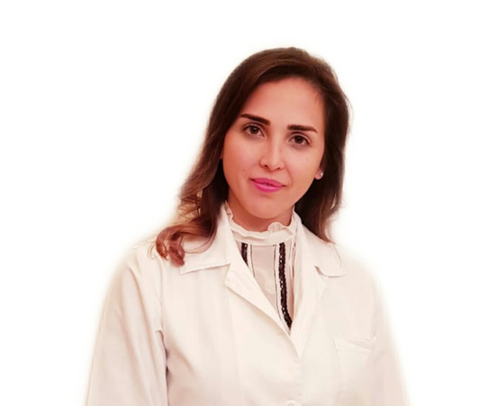

DR. CHRISTINAARAMOUNY
Dr. Christina Aramouny, is specialized in child and adult psychiatry, addictology, and legal psychiatry.
She graduated from the University of St. Joseph Lebanon, Université Catholique de Louvain Belgium, Paris-Sud and Paris Descartes France.
Dr. C. Aramouny has wide experience in Lebanon and in Belgium. She is involved in clinical research.

DR GEORGE
Dr. Georges BOUSTANY, consultant in General Surgery; specialized in Colorectal, Hepato-Bilio-Pancratic, Oncologic and Bariatric Surgery. He is graduated from the Lebanese University, specialized in France, UPMC and UPEC, Paris. Dr. G BOUSTANY has wide experience in Lebanon and France. He is Fellow of the European Board of General Surgery (FEBS) and the Lebanese Board of General Surgery.
About us
Our objective is to deeply understand your illness in order to help you achieving a level of healing and health that permits you to be fitter and stronger.
OUR SERVICES
Orthopatics
We are specialized in upper and lower limbs surgery (wounds, fracture, carpal tunnel release and Morton neuroma …), joint replacement (shoulder, knee and hip replacement) as well spinal surgery ( fracture, stenosis and arthrodesis). We fix bone deformities in children, using braces to straighten the child's bones.
We treat sports related injuries, strains , sprains, dislocations as well ligament and tendon rupture.
Our general surgeon encompasses a full range of emergency and elective inpatient and day case surgery. He is expert in his field and provides patients with comprehensive, compassionate pre- and post-operative care, offers a wide range of investigations and treatment for benign and malignant surgical diseases with specific sub-speciality interests in upper and lower gastrointestinal surgery, as well as a range of interventions to treat diseases of the biliary systems, and endocrine (thyroid) surgery.
Our doctor tailors treatment to the patient’s individual needs; Using the latest techniques and technologies, he evaluates, treats and manages diseases or injuries that require elective or immediate surgery.
From complex to routine surgeries, our surgeon strives to make a difference in our patients’ lives.
In many cases, he can use noninvasive or minimally invasive techniques to diagnose disease. By using these techniques, he is able to diagnose potentially life-threatening conditions--such as cancer--quickly, accurately, and with little or no need for invasive surgery.
Minimally invasive procedures offer several benefits when compared to conventional surgery, including:
Less pain
Faster recovery
Less scarring
Less injury to tissue
Shorter hospital stays
Get in touch, or swing by for a cup of coffee.
General surgeon
Our general surgeon encompasses a full range of emergency and elective inpatient and day case surgery. He is expert in his field and provides patients with comprehensive, compassionate pre- and post-operative care, offers a wide range of investigations and treatment for benign and malignant surgical diseases with specific sub-speciality interests in upper and lower gastrointestinal surgery, as well as a range of interventions to treat diseases of the biliary systems, and endocrine (thyroid) surgery.
Our doctor tailors treatment to the patient’s individual needs; Using the latest techniques and technologies, he evaluates, treats and manages diseases or injuries that require elective or immediate surgery.
From complex to routine surgeries, our surgeon strives to make a difference in our patients’ lives.
In many cases, he can use noninvasive or minimally invasive techniques to diagnose disease. By using these techniques, he is able to diagnose potentially life-threatening conditions--such as cancer--quickly, accurately, and with little or no need for invasive surgery.
Minimally invasive procedures offer several benefits when compared to conventional surgery, including:
Less pain
Faster recovery
Less scarring
Less injury to tissue
Shorter hospital stays
Patient registration portal for appointments online
patient ?click
Admin user creation & login portal
Admin ? click
contact
2d Floor, Helweh building.
Azmi street
Tripoli, Lebanon
france